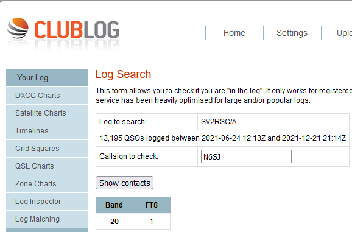

Paul, Thanks! Maybe my inquiry spurred the Monk to pause in his Christmas duties and feed the hungry mob of DXers! I couldn’t have done it without the Killer Spot from you via John K6YP. Over the years, I have worked a number of ATNO’s with, as Ringo would say, a little help from my friends! TKS, VY 73, es Merry Christmas, Steve N6SJ  From: Paul N6PSE <pauln6pse@gmail.com> Congratulations Steve! You are in his log! Paul N6PSE |